7.3 卵巢相关疾病
卵巢作为女性性腺，执行关键的生殖和内分泌功能。干扰卵巢排卵的因素可导致不孕。
7.3.1 卵巢子宫内膜囊肿
- 临床概述：
子宫内膜异位症是指子宫外存在子宫内膜组织（腺体和间质）。卵巢巧克力囊肿在早期阶段表现为微小灶，可进展为单个或多个囊肿，这些囊肿因其特征性的陈旧、巧克力样血液内容物而被称为子宫内膜异位性卵巢囊肿或卵巢巧克力囊肿[52]。
- 临床表现：
月经痛：进行性继发性月经痛是标志性症状。
不孕症：卵巢子宫内膜异位囊肿常见的并发症。
• 深部性交痛：性交深部进入时的疼痛。
• 月经异常：月经量增多和/或月经期延长。
- 囊肿破裂：突发性、剧烈的下腹痛，常伴有恶心、呕吐和排便充盈感。
- 超声特征：
随着囊肿大小的增加，正常卵巢组织的可见度减低。回声随疾病进展和月经周期阶段而变化。
(1) 简单囊肿：
• 圆形或椭圆形无回声区，边界清晰。
• 壁略增厚和微小高回声（见图 7.63）。
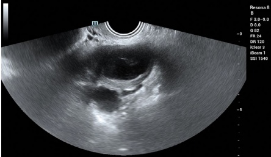
7.3 Ovary-Related Diseases
The ovaries, as the female gonads, perform critical reproductive and endocrine functions. Factors that disrupt ovarian ovulation can lead to infertility.
7.3.1 Ovarian Endometrial Cyst
- Clinical overview:
Endometriosis refers to the presence of endometrial tissues (glands and stroma) outside the uterus. Ovarian endometriotic lesions are categorized as microfoci in the early stages, which can progress into single or multiple cysts termed endometriotic ovarian cysts or ovarian chocolate cysts due to their characteristic contents of stale, chocolate-like blood [52].
- Clinical manifestations:
Dysmenorrhea: Progressive secondary dysmenorrhea is the hallmark symptom.
Infertility: A common complication associated with ovarian endometriotic cysts.
• Deep dyspareunia: Pain during deep penetration during intercourse.
• Menstrual abnormalities: Increased menstrual flow and/or prolonged menstruation.
- Ruptured cysts: Sudden, severe lower abdominal pain, often accompanied by nausea, vomiting, and a sensation of rectal fullness.
- Ultrasonographic features:
The visibility of normal ovarian tissue diminishes as the cyst size increases. Echogenicity varies with the disease's progression and menstrual cycle phases.
(1) Simple cysts:
• Round or oval anechoic areas with well-defined borders.
• Slightly thickened walls and tiny bright internal echoes (see Fig. 7.63).
(2) 多囊卵巢子宫内膜异位症：
由不同厚度的隔膜分隔的多个圆形或不规则无回声区
壁增厚、内膜粗糙，囊肿内有细亮回声（见图 7.64）
(3) 均匀亮斑型：
• 充满均匀、细小、明亮回声的囊肿
• 内膜增厚、不规则 [[53]]（见图 7.65）
(4) 层状囊性液体类型：
• 囊壁增厚，内表面粗糙
- 一侧有致密亮斑，另一侧为无回声的液体平面 [54]（见图 7.66）
(5) 囊内占位性病变：
• 囊壁增厚，内膜粗糙
• 后壁或中央散在微小高回声点和高回声肿块（见图 7.67）
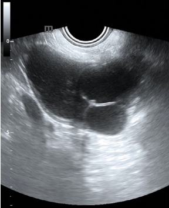
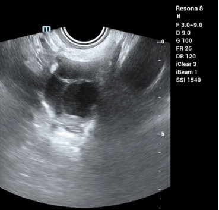
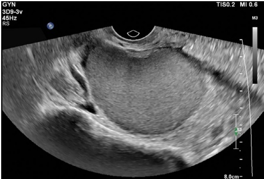
8.0cm-
(2) Polycystic ovarian endometriosis:
Multiple round or irregular anechoic areas separated by septa of varying thickness
Thickened walls, rough inner lining, and fine bright echoes within the cyst (see Fig. 7.64)
(3) Homogeneous bright spot type:
• Cysts filled with uniform, fine, bright echoes
• Thickened, irregular inner walls [53] (see Fig. 7.65)
(4) Stratified cystic fluid type:
• Thickened cyst wall with a rough inner surface
- A fluid plane with dense bright spots on one side and an anechoic area on the other [54] (see Fig. 7.66)
(5) Intracystic mass type:
• Thickened cyst wall with rough inner lining
• Scattered tiny bright echoes and a hyperechoic mass along the posterior wall or center (see Fig. 7.67)
8.0cm-
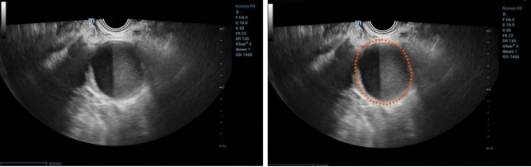
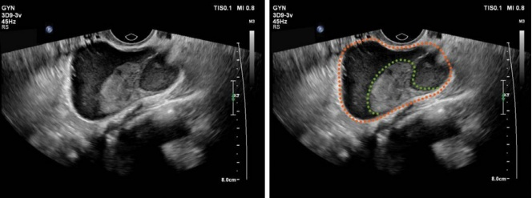
(6) 混合型：
• 以上类型的重叠和交界特征。
(7) 彩色多普勒和频谱多普勒超声特征：
• 囊肿内无血流信号。
• 可在囊壁或隔膜处观察到血流受限。
- 可检测到低速、中等阻力的血流频谱（见图 7.68）。
- 鉴别诊断：
(1) 输卵管脓肿或输卵巢脓肿：
这些病变在超声上表现为壁增厚不均和管状结构。抗感染治疗后的随访扫描有助于确诊。
(2) 卵巢恶性肿瘤：
将具有不规则壁、实性回声和不同厚度隔的卵巢巧克力囊肿与恶性肿瘤区分开来可能具有挑战性。
(6) Mixed type:
• Overlapping and intersecting features from the above types.
(7) Color Doppler and spectral Doppler ultrasound features:
• No blood flow signals within the cyst.
• Limited blood flow may be observed in the cyst wall or septa.
- Low-velocity, moderate-resistance blood flow spectra can be detected (see Fig. 7.68).
- Differential diagnosis:
(1) Tubal abscess or tubo-ovarian abscess:
These conditions feature unevenly thickened walls and duct-like structures on ultrasound. A follow-up scan after anti-infective treatment can help confirm the diagnosis.
(2) Ovarian malignant tumor:
Distinguishing an ovarian chocolate cyst with irregular walls, solid echoes, and septa of varying thickness from a malignant tumor can be challenging.
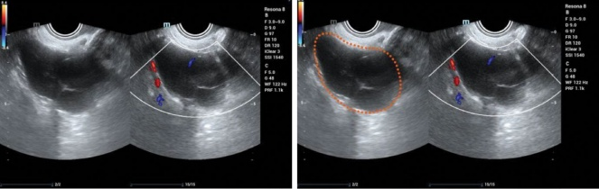
恶性肿瘤通常在实性区域和隔中有丰富的血流信号。高速度、低阻力的血流谱提示恶性。
- 对生育能力和治疗原则的影响：
子宫内膜异位症可通过以下机制显著影响生育力：
• 解剖异常：盆腔和输卵管畸形。
• 免疫失调：异常细胞因子和改变的腹腔环境。
卵巢功能障碍：卵巢储备下降、卵母细胞质量受损和排卵受阻。
子宫内膜容受性：阻碍成功着床的变化。
子宫内膜异位症的管理重点是：
• 病灶的减小和清除
• 镇痛和控制
• 促进生育力
• 预防复发
目前的治疗包括以下几种：
• 药物制剂（例如，激素疗法）
• 手术干预（例如，腹腔镜切除）
• 介入治疗
• 辅助生殖治疗（例如，IVF）
- 深部浸润性子宫内膜异位症（DIE）：
深度侵犯 $\geq$ 5 mm 的子宫内膜异位症。
子宫内膜异位症的常见部位包括以下：
子宫骶韧带
• 直肠阴道区和隔膜
• 阴道穹窿
• 肠壁、膀胱壁和输尿管 [55]（见图 7.69）。
Malignant tumors typically show abundant blood flow signals in solid areas and septa. A high-velocity, low-resistance blood flow spectrum is indicative of malignancy.
- Impact on fertility and treatment principles:
Endometriosis can significantly impact fertility through mechanisms such as:
• Anatomical abnormalities: Pelvic and tubal distortions.
• Immune dysregulation: Aberrant cytokines and altered intra-abdominal environment.
Ovarian dysfunction: Decreased ovarian reserve, impaired oocyte quality, and obstructed ovulation.
Endometrial receptivity: Changes that hinder successful implantation.
The management of endometriosis focuses on:
• Reduction and removal of lesions
• Pain relief and control
• Fertility promotion
• Recurrence prevention
Current treatments include the following:
• Pharmacological agents (e.g., hormonal therapies)
• Surgical interventions (e.g., laparoscopic excision)
• Interventional therapies
• Assisted reproductive treatments (e.g., IVF)
- Deep infiltrating endometriosis (DIE):
DIE involves endometriotic lesions infiltrating $ \geq $5 mm in depth.
Common locations of DIE include the following:
Uterosacral ligament
• Rectovaginal area and septum
• Vaginal fornix
• Bowel, bladder wall, and ureters [55] (see Fig. 7.69).
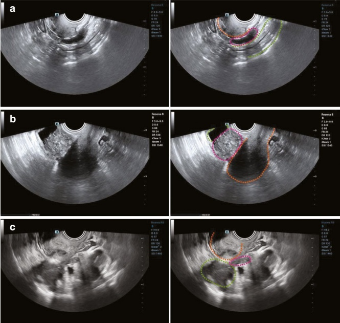
7.3.2 多囊卵巢综合征（PCOS） (PCOS)
1. 临床概述：
多囊卵巢综合征（PCOS），又称斯坦-莱文塔尔综合征，是根据欧洲人类生殖与胚胎学学会（ESHRE）和美国生殖医学学会（ASRM）于2003年提出的鹿特丹标准诊断的。诊断需要满足以下特征中的两项，并排除其他高雄激素状态：
(1) 排卵功能减退或无排卵
(2) 多雄激素的临床和/或生化指征
(3) 超声可见多囊卵巢：一侧或双侧卵巢内 $\geq$12个卵泡（直径2–9 mm）和/或卵巢体积 $\geq$10 mL [56]
- 临床表现：
常见的临床表现包括以下几项：
- 月经不调：月经量少或无经，子宫出血不规则
• 多毛症：多毛、痤疮和黑棘皮病
• 不孕症
• 肥胖
- 超声特征：
超声可识别多囊卵巢形态（PCOM），但不能确诊多囊卵巢综合征（PCOS）。评估时应排除黄体、囊肿或直径 $\geq$10 mm的优势卵泡的存在。主要的超声特征包括以下几点：
(1) 双侧卵巢均匀增大，边界清晰，周围回声增强，髓质增厚并回声增多，且卵泡（2–9 mm）呈“轮状”排列于卵巢周围 [57]（见图 7.70）。
(2) 连续排卵监测期间无优势卵泡。
(3) 由于雌激素暴露时间过长引起的不同程度的子宫内膜增生。


7.3.2 Polycystic Ovary Syndrome (PCOS)
1. Clinical overview:
Polycystic ovary syndrome (PCOS), also known as Stein-Leventhal syndrome, is diagnosed based on the Rotterdam Criteria proposed by the European Society of Human Reproduction and Embryology (ESHRE) and the American Society for Reproductive Medicine (ASRM) in 2003. Diagnosis requires two of the following features, with other hyperandrogenic conditions excluded:
(1) Oligo- or anovulation
(2) Clinical and/or biochemical signs of hyperandrogenism
(3) Polycystic ovaries observed on ultrasound: $ \geq $12 follicles (2–9 mm in diameter) in one or both ovaries and/or ovarian volume $ \geq $10 mL [56]
- Clinical manifestations:
Common clinical manifestations include the following:
- Irregular periods: Scanty or absent menstruation, irregular uterine bleeding
• Hyperandrogenism: Hirsutism, acne, and acanthosis nigricans
• Infertility
• Obesity
- Ultrasonographic features:
Ultrasound can identify polycystic ovarian morphology but does not provide a definitive diagnosis of PCOS. Assessments should exclude the presence of corpus luteum, cysts, or dominant follicles $ \geq $10 mm in diameter. Key ultrasonographic features include the following:
(1) Uniformly enlarged ovaries with clear borders, enhanced peripheral echogenicity, thickened medulla with increased echogenicity, and $ \geq $12 follicles (2–9 mm) arranged in a “wheel-like” pattern around the ovary [57] (see Fig. 7.70).
(2) Absence of dominant follicles during continuous ovulation monitoring.
(3) Endometrial hyperplasia of varying degrees due to prolonged estrogen exposure.

(4) 彩色多普勒发现：可检测到髓质卵巢动脉中呈中等阻力的动脉谱（见图7.71）。
- 对生育能力和治疗原则的影响：
多囊卵巢综合征（PCOS）通过引起排卵障碍、降低子宫内膜容受性和降低卵子质量影响生育力。与PCOS相关的内分泌代谢异常会进一步损害受孕。此外，PCOS与妊娠并发症密切相关。生育治疗包括以下几种：
• 药物促排卵疗法
• 体外受精和胚胎移植（IVF-ET）
• 腹腔镜卵巢穿孔
7.3.3 卵巢肿瘤概述
- 组织学分类：
世界卫生组织（WHO）最新的卵巢肿瘤分类于2020年制定，为诊断和管理卵巢肿瘤提供了标准化框架[58]。
- 卵巢癌分期：
国际妇产科联合会（FIGO）分期系统，最近修订于2014年，广泛用于评估癌症的范围并指导治疗决策[59]。
- 临床表现：
(1) 良性肿瘤：
大型良性卵巢肿瘤可引起腹胀、肿块和压迫症状，如尿频、尿痛和便秘。妇科检查时，肿块通常是囊性的或实性的，表面光滑，活动度好。
(4) Color Doppler findings: Moderate-resistance arterial spectra in the medullary ovarian artery may be detected (see Fig. 7.71).
- Impact on fertility and treatment principles:
PCOS impacts fertility by causing ovulation disorders, reducing endometrial receptivity, and lowering oocyte quality. Endocrine-metabolic abnormalities associated with PCOS can further impair conception. Additionally, PCOS is strongly linked to pregnancy complications. Fertility treatments include the following:
• Pharmacological ovulation induction therapy
• In vitro fertilization and embryo transfer (IVF-ET)
• Laparoscopic ovarian perforation
7.3.3 Overview of Ovarian Tumors
- Histologic classification:
The most current World Health Organization (WHO) classification of ovarian oncology was developed in 2020, providing a standardized framework for diagnosing and managing ovarian tumors [58].
- Staging of ovarian cancer:
The International Federation of Gynecology and Obstetrics (FIGO) staging system, last revised in 2014, is widely used to assess the extent of cancer and guide treatment decisions [59].
- Clinical manifestations:
(1) Benign tumors:
Large benign ovarian tumors may cause abdominal distension, masses, and compression symptoms such as frequent urination, dysuria, and constipation. On gynecological examination, the mass is typically cystic or solid, smooth-surfaced, and mobile.
(2) 恶性肿瘤：
恶性卵巢肿瘤，常为双侧，在晚期表现为腹痛、腹胀、消瘦和盆腔积液。肿块多为实性，表面不平整，活动度受限。
- 合并发症和超声特征：
(1) 发圈：
卵巢扭转是一种常见的妇科急症，通常表现为突发性剧烈下腹痛，常由体位改变诱发。疼痛常伴有恶心、呕吐，严重时可出现休克。扭转的超声征象包括以下几点：
(a) 肿块识别：
位于囊肿和子宫之间的固体肿块，常靠近子宫，形状不规则，轮廓清晰或不清。该肿块可能显示混合中低回声伴有薄的低回声条纹（“涡流征”）。在动态扫描时，该肿块可能表现出螺旋运动，提示血管蒂扭转。这是卵巢扭转的特征性体征。
(b) 囊肿特征：
扭转后，囊肿呈隆起和张力状态（通常>5 cm），内部无回声并有多个高回声点。由于水肿，囊壁可能增厚。
(c) 压痛试验：
使用探头对肿块及其蒂进行压痛试验可能会得到阳性结果。
彩色多普勒超声可显示悬吊带内蜿蜒的扩张血管 [60, 61]（见图7.72和图7.73）。
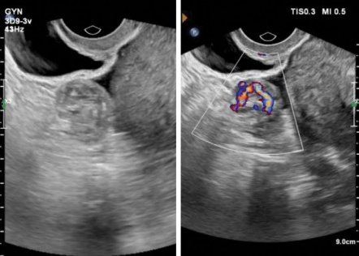
(2) Malignant tumors:
Malignant ovarian tumors, often bilateral, manifest in advanced stages as abdominal pain, distension, cachexia, and pelvic effusion. Masses are mostly solid, with uneven surfaces and limited mobility.
- Complications and ultrasonographic features:
(1) Torsion:
Ovarian torsion is a common gynecological emergency and typically presents with sudden severe lower abdominal pain, often triggered by a change in body position. The pain is frequently associated with nausea, vomiting, and, in severe cases, shock. Ultrasonographic features of torsion include the following:
(a) Mass identification:
A solid mass between the cyst and the uterus, often close to the uterus, irregular in shape with clear or unclear contours. The mass may show mixed medium-low echogenicity with thin low-echo strips (the “whirlpool sign”). On dynamic scanning, this mass may demonstrate spiral motion, indicating the twisted vascular pedicle. This is a characteristic sign of ovarian torsion.
(b) Cyst features:
Post-torsion, the cyst appears elevated and under tension (usually >5 cm), with anechoic interiors and multiple bright spots. Due to edema, the cyst wall may be thickened.
(c) Tenderness test:
Using the transducer to perform a tenderness test on the mass and its pedicle may yield positive results.
Color Doppler ultrasound can reveal the dilated blood vessels with meandering paths in the pedicle [60, 61] (see Figs. 7.72 and 7.73).
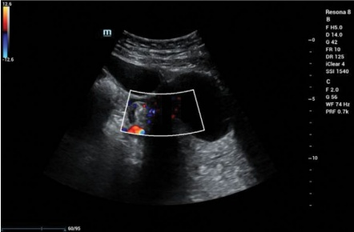
(2) 破裂：
卵巢囊肿破裂是一种常见的妇科急症。其超声特征包括以下几点：
(a) 囊肿大小减小或消失：原发性囊肿在破裂后可能会缩小甚至完全消失。
(b) 血肿形成：在血肿病例中，可在同侧附件区检测到混合回声的肿块。该肿块通常具有不规则形态，并常伴有盆腔积液。
这些发现提示卵巢囊肿破裂，有助于指导进一步的管理 [62]（见图 7.74 和 7.75）。
(3) 感染：
尽管罕见，但感染通常是扭转或破裂的继发表现。其表现为腹痛、发热以及腹膜刺激征，如反跳痛和肌肉紧张。初始治疗包括抗生素，随后进行手术干预。
(4) 恶性转化：
短时间内肿瘤快速生长可能提示恶性转化，需要及时手术干预。
超声特征：
(a) 快速增大：肿块迅速增大。
(b) 内回声紊乱：内部回声变得不规则，固体成分增多。
(c) 增强血流：肿块内血流信号显著增加。
(d) 盆腔积液：常可见盆腔积液形成。
(2) Rupture:
Ovarian cyst rupture is a common gynecological emergency. Its ultrasonographic features include the following:
(a) Cyst size decrease or disappearance: The original cyst may shrink in size or even disappear following rupture.
(b) Hematoma formation: In cases of hematoma, a mixed echogenic mass can be detected in the ipsilateral adnexal area. This mass typically has an irregular morphology and is often associated with pelvic effusion.
These findings indicate an ovarian cyst rupture, and help guide further management [62] (see Figs. 7.74 and 7.75).
(3) Infection:
Though rare, infection is usually secondary to torsion or rupture. It presents with abdominal pain, fever, and peritoneal signs such as rebound tenderness and muscle tension. Initial treatment includes antibiotics, followed by surgical intervention.
(4) Malignant transformation:
Rapid growth of a tumor in a short period of time may suggest malignant transformation, requiring prompt surgical intervention.
Ultrasonographic features:
(a) Rapid enlargement: The mass increases in size quickly.
(b) Disorganized internal echoes: The internal echoes become irregular, with increased solid components.
(c) Enhanced blood flow: There is a significant increase in blood flow signals within the mass.
(d) Pelvic effusion: The development of pelvic effusion is often observed.
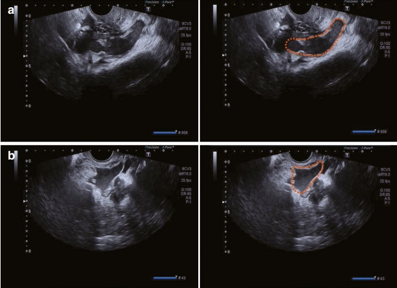
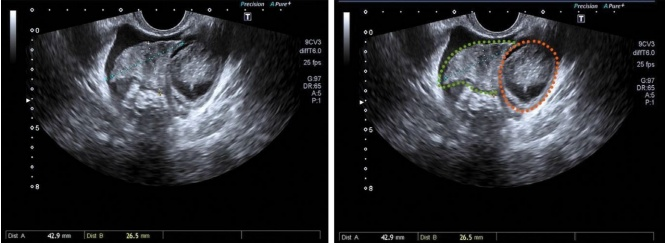
5. 对生育能力和治疗原则的影响
大型卵巢肿瘤会干扰卵子（卵母细胞）的生成并降低卵巢储备。手术治疗，特别是涉及切除肿瘤时，可能会进一步损伤正常的卵巢组织并降低卵巢储备。
对于有生育需求的患者，应根据肿瘤的组织学分类和分期进行保质手术 [63]。然而，即使是保质手术也可能与卵巢储备功能下降有关的风险。
7.3.4 卵巢肿瘤-类似病变
卵巢肿瘤样病变，也称为非肿瘤性卵巢囊肿，是最常见的卵巢疾病组。这些病变包括卵泡囊肿、卵泡膜黄素囊肿、卵泡膜黄素囊肿和卵巢过度刺激综合征（OHSS）。虽然这些病变通常是良性的，但它们可能表现出与肿瘤相似的症状，需要鉴别诊断和适当的管理。
- 卵泡囊肿
(1) 临床概述：
小卵泡囊肿通常是单个的，但偶尔可能是多个。这些囊肿表现为从卵巢表面突出的水疱状结构。囊壁薄，内表面光滑，内部液体清亮呈淡黄色。大多数小卵泡囊肿体积较小，直径通常不超过 5 cm。多数会在 4-6 周内自行逐渐吸收或破裂。
(2) 超声特征：
子宫内膜囊肿通常表现为卵巢内的圆形或椭圆形无回声区，边界清晰，囊壁薄而光滑。这些囊肿最常是单个的，并从卵巢表面突出。其内部直径范围为 1 至 3 cm，很少超过 5 cm。这些囊肿在随访超声检查时可能自行消退 [64]（见图 7.76）。
(3) 鉴别诊断：
卵泡囊肿需要与卵巢囊腺瘤和巧克力囊肿区分开来。如果在单次超声检查中无法明确区分，可以通过随访检查观察囊肿是否消退，因为卵泡囊肿通常会随着时间自行消退，无需干预。
2. 黄体囊肿
(1) 临床概述：
排卵后，破裂的卵泡转变为黄体。当卵泡或黄体内积血量较大时，可形成黄体血肿。该
5. Impact on fertility and treatment principles
Large ovarian tumors can interfere with egg (oocyte) production and reduce ovarian reserve. Surgical treatment, especially if it involves the removal of the tumor, may further damage normal ovarian tissue and decrease ovarian reserve.
For patients with reproductive needs, fertility-preserving surgery should be performed based on histological classification and staging of the tumor [63]. However, even fertility-preserving surgeries may have risks related to reduced ovarian reserve.
7.3.4 Ovarian Tumor-Like Conditions
Ovarian tumor-like conditions, also known as nonneoplastic ovarian cysts, are the most common group of ovarian disorders. These conditions include follicular cysts, corpus luteum cysts, theca lutein cysts, and ovarian hyperstimulation syndrome (OHSS). While these conditions are generally benign, they can present with symptoms similar to neoplastic tumors, requiring differentiation and appropriate management.
- Follicular cyst
(1) Clinical overview:
Follicular cysts are typically single but can occasionally be multiple. These cysts appear as blister-like protrusions from the surface of the ovary. The wall of the cyst is thin, the inner surface is smooth, and the fluid within is clear and yellowish. Most follicular cysts are small, often measuring no more than 5 cm in diameter. The majority will either gradually resolve or rupture on their own within 4–6 weeks.
(2) Ultrasonographic features:
Follicular cysts typically appear as round or oval anechoic areas within the ovary, with clear borders and a thin, smooth cyst wall. These cysts are most often single and protrude from the ovary's surface. Their internal diameter ranges from 1 to 3 cm, rarely exceeding 5 cm. These cysts may resolve spontaneously upon follow-up ultrasound exams [64] (see Fig. 7.76).
(3) Differential diagnosis:
Follicular cysts need to be differentiated from ovarian cystadenomas and chocolate cysts. If the distinction is unclear during a single ultrasound scan, follow-up examinations can be used to observe the cyst's resolution, as follicular cysts typically resolve without intervention over time.
2. Corpus luteum cyst
(1) Clinical overview:
Following ovulation, the ruptured follicle transforms into the corpus luteum. When a significant amount of blood accumulates within the follicle or corpus luteum cavity, it can develop into a corpus luteum hematoma. This
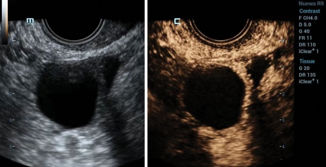
血肿最终可能会液化，形成黄体囊肿。通常这些囊肿是孤立的，内部直径通常不超过5厘米，但偶尔可达到10厘米。 囊性液体通常呈透明或棕色。黄体囊肿最常在月经周期的中期至晚期或早期妊娠时遇到。
(2) 超声特征：
超声上，黄体囊肿表现为具有网状内部回声的复杂囊性肿块[65]。
(a) 早期：
该囊肿呈亚圆形、壁厚结构，边界清晰。内膜粗糙，囊肿可能呈异质性低回声，类似于实性成分（见图 7.77）。
(b) 中期：
血开始凝固时，囊壁变薄并更规则。内壁保持光滑，囊内回声减小，常呈“蜘蛛网样”（见图 7.78）。
(c) 后期：
血吸收后，囊肿缩小并转变为白色体（白体），表现为与周围卵巢组织（见图7.79）相连的、边界不清的、实性、略高回声的肿块。
hematoma may eventually liquefy, resulting in the formation of a corpus luteum cyst. Typically, these cysts are solitary, with an internal diameter usually not exceeding 5 cm, though they can occasionally reach up to 10 cm. The cystic fluid is often translucent or brownish in color. Corpus luteum cysts are most commonly encountered during the mid to late phases of the menstrual cycle or in early pregnancy.
(2) Ultrasonographic features:
Ultrasonographically, a corpus luteum cyst appears as a complex cystic mass characterized by a reticular pattern of internal echoes [65].
(a) Early stage:
The cyst appears as a subcircular, thick-walled structure with clear borders. The inner lining is rough, and the cyst may have a heterogeneous hypoechoic appearance resembling solid components (see Fig. 7.77).
(b) Intermediate stage:
As the blood begins to coagulate, the cyst wall becomes thinner and more regular. The inner wall remains smooth, and the intracystic echogenicity decreases, often showing a “spider-web” appearance (see Fig. 7.78).
(c) Late stage:
As blood is absorbed, the cyst shrinks and transforms into a white body (corpus albicans), which appears as a solid, slightly hyperechoic mass with poorly defined boundaries from the surrounding ovarian tissue (see Fig. 7.79).
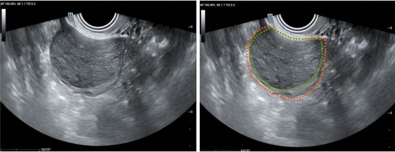
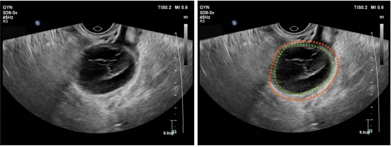
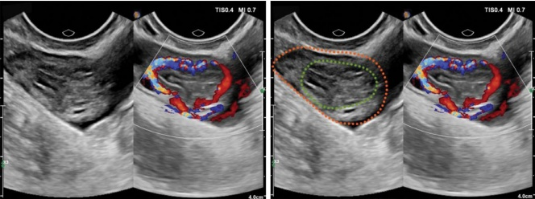
(3) 彩色多普勒和频谱多普勒超声：
可在黄体囊壁内观察到丰富的周围环周血流信号。血流通常显示为高速度、低阻力谱（见图 7.79）。
3. 卵巢皮质落泡囊肿
(1) 临床概述：
卵泡膜黄素囊肿通常是双侧的，但偶尔可能是单侧的。
(2) 超声特征：
双侧卵巢通常增大，呈多囊样改变。在卵巢内可见多个边界清晰、无回声区，壁薄且光滑（见图 7.80）。
(3) 鉴别诊断：
超声检查时，区分卵巢过度刺激综合征（OHSS）和卵泡膜黄素囊肿具有挑战性 [66]。然而，OHSS通常发生在人工诱导排卵之后，而卵泡膜黄素囊肿更常与妊娠滋养细胞疾病相关。
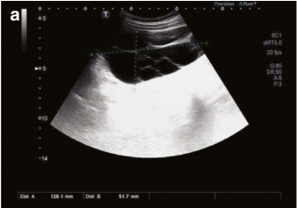
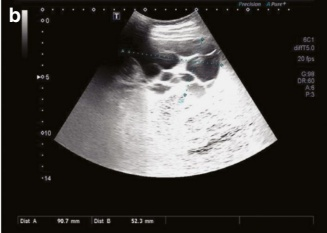
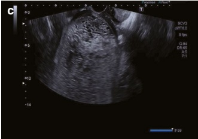
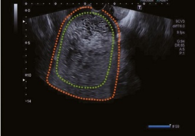
(3) Color Doppler and spectral Doppler ultrasound:
Abundant peripheral circumferential blood flow signals may be observed within the wall of the corpus luteum cyst. The blood flow often shows a high-velocity, low-resistance spectrum (see Fig. 7.79).
3. Theca lutein cyst
(1) Clinical overview:
Theca lutein cysts are often bilateral but can occasionally be unilateral.
(2) Ultrasonographic features:
Both ovaries are usually enlarged, presenting with a multicystic pattern. Multiple well-defined anechoic areas with thin, smooth walls are seen within the ovaries (see Fig. 7.80).
(3) Differential diagnosis:
On ultrasound, differentiating between OHSS and theca lutein cysts can be challenging [66]. However, OHSS typically develops after artificially induced ovulation, whereas theca lutein cysts are more commonly associated with trophoblastic disorders.
7.3.5 常见卵巢肿瘤
1. 成熟囊性畸胎瘤
(1) 临床概述：
成熟囊性畸胎瘤，也称为皮样囊肿，是由源自两到三胚层的组织组成的肿瘤。这些肿瘤大小不一，通常呈圆形，表面光滑，有良好的包膜，并且常为单房和囊性的。 这些囊肿内充满皮脂和毛发，偶尔可能伴有小的结节状突出物 [67]。
(2) 超声特征：
成熟囊性畸胎瘤可表现为囊性、混合囊实性或实性肿块。关键的超声征象包括以下几点：
(a) 宫腔内结节：
在囊性肿瘤的内壁上可见单个或多个高回声结节，常伴有后方声影。这些强回声结节通常由牙齿或骨骼成分构成（见图 7.81）。
(b) 脂肪-液体层征：
囊性肿瘤内高回声（富脂）区和无回声（含上皮碎屑、毛发等）区域之间有一条明显的水平分界线。密度较大的物质，如毛发和上皮碎屑，会沉到底部，形成这条特征性线（见图7.82）。
(c) 回声白球（漂浮球）：
可在囊肿的无回声区内看到单个或多个圆形或椭圆形的强回声肿块，这些肿块边界清晰。这些浮动或沉到底侧的肿块主要由脂质和毛发组成（见图 7.83）。
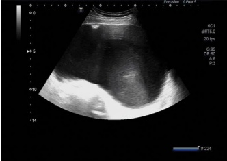
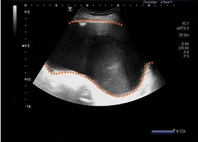
7.3.5 Common Ovarian Tumors
1. Mature Cystic Teratomas
(1) Clinical overview:
Mature cystic teratomas, also known as dermoid cysts, are tumors composed of tissues derived from two or three germ layers. These tumors vary in size and are typically round with a smooth surface, well-encapsulated, and often unilocular and cystic. The cysts are filled with sebaceous material and hair and may occasionally feature a small nodule-like protrusion [67].
(2) Ultrasonographic features:
Mature cystic teratomas can present as cystic, mixed cystic-solid, or solid masses. Key ultrasonographic signs include the following:
(a) Mural nodule(s):
Single or multiple elevated, highly echogenic nodules may be seen on the inner wall of the cystic tumor, often with posterior acoustic shadowing. These strongly echogenic nodules are typically composed of dental or skeletal elements (see Fig. 7.81).
(b) Fat-fluid level sign:
A distinct horizontal demarcation line between the hyperechoic (lipidrich) and anechoic (containing epithelial debris, hair, etc.) areas within the cystic tumor. The denser materials, such as hair and epithelial debris, sink to the bottom, forming this characteristic line (see Fig. 7.82).
(c) Echogenic white ball (floating ball):
Single or multiple round or oval hyperechoic masses with well-defined borders may be seen within the anechoic zone of the cyst. These masses, which float or settle to one side, are mostly composed of lipids and hair (see Fig. 7.83).
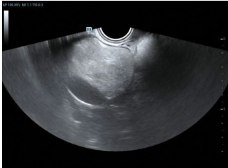
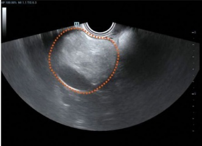
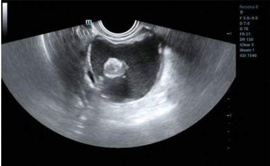
(d) 点和/或线：
由囊性肿瘤内的毛发引起，这些强回声的短条纹出现在无回声区域内，通常呈平行排列（见图 7.84）。
(e) 完全回声病变：
粘稠脂质呈均匀、致密的、回声点状物，漂浮在病变区域内，随压力或操作移动（见图 7.85）。
(f) 多囊样征：
囊肿无回声区内的小囊，形成“囊中囊”外观（见图 7.86）。
(克) 非均质结构征象：
可见上述描述的混杂回声特征，因为囊肿含有来自多种组织的成分（见图 7.87）。
(d) Dots and/or lines:
Caused by hair within the cystic tumor, these strongly echogenic, short streaks appear within the anechoic region, typically arranged parallel to each other (see Fig. 7.84).
(e) Completely echogenic lesion:
Viscous lipids present as homogeneous, dense, echoic spots that float within the lesion area and move with pressure or manipulation (see Fig. 7.85).
(f) Polycystic sign:
Small sacs within the anechoic area of the cyst, creating the appearance of “a sac within a sac” (see Fig. 7.86).
(g) Sign of heterogeneous structures:
A mixture of the above-described echogenic features is observed, as the cyst contains components from multiple tissues (see Fig. 7.87).
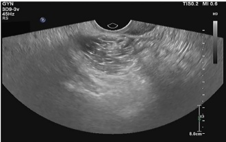
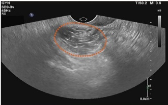
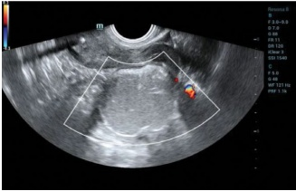
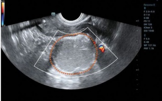
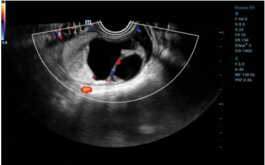
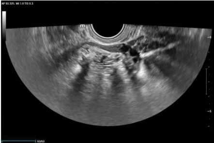
(3) 彩色多普勒超声：
大多数成熟囊性畸胎瘤血流信号很少或没有。然而，在某些情况下，肿瘤可能含有神经组织或甲状腺组织等特殊组织成分，这些成分的实体部分可能会显示可检测到的血流信号（见图 7.88）。
(4)鉴别诊断：
畸胎瘤有时需要与正常的肠道气体进行鉴别。肠蠕动可引起气体的位置改变，而畸胎瘤的位置是固定的。如果由于肠道蠕动缓慢仍难以鉴别，可建议患者在排便后复查。
- 卵巢黄体瘤-纤维瘤群（OTFG）
(1) 临床概述：
卵巢皮质细胞瘤-纤维母细胞瘤群（OTFG）包括根据胎质细胞和成纤维细胞含量不同分类的肿瘤。该组包含以下三种亚型：
(a) 皮质细胞瘤（或胎质细胞瘤）：完全由胎质细胞组成。
(b) 卵巢纤维肉瘤：含有不同比例的卵巢膜细胞和成纤维细胞。
(c) 纤维瘤：完全由成纤维细胞组成，几乎不含卵巢膜细胞。
(2) 超声特征：
OTFG肿瘤由具有卵巢膜细胞和成纤维细胞特征的细胞组成。 胎质细胞比例越大，后方回声增强越明显；而成纤维细胞含量越高，后方声衰减越显著。 卵巢畸胎性囊肿（OTFG）典型的超声表现为单侧附件区占位，呈实性或以实性为主，圆形，边界清晰，并被周围膜包绕。 该肿块通常呈低回声，内部可见颗粒状或条纹状高回声，并显示后方增强或衰减的回声。
(3) Color Doppler ultrasound:
Most mature cystic teratomas exhibit little to no blood flow. However, in some cases, the tumor may contain specialized tissue components, such as nerve tissue or thyroid tissue, which may show detectable blood flow signals within the solid components (see Fig. 7.88).
(4) Differential diagnosis:
A teratoma may sometimes need to be differentiated from normal intestinal gas. Intestinal peristalsis can cause the position of the gas to change, in contrast to the fixed position of the teratoma. If differentiation remains difficult due to slow intestinal movement, the patient may be advised to repeat the examination after defecation.
- Ovarian thecoma-fibroma group (OTFG)
(1) Clinical overview:
The ovarian thecoma-fibroma group (OTFG) comprises tumors classified based on the varying content of thecal cells and fibroblasts. The three subtypes include the following:
(a) Thecoma (or theca cell tumor): Composed entirely of thecal cells.
(b) Thecoma-fibroma: Contains both thecal cells and fibroblasts in varying proportions.
(c) Fibroma: Made up entirely of fibroblasts, with almost no thecal cells.
(2) Ultrasonographic features:
OTFG tumors consist of cells with characteristics of both thecal cells and fibroblasts. The greater the proportion of thecal cells, the more prominent the posterior echogenic enhancement, whereas the higher the content of fibroblasts, the more pronounced the posterior acoustic attenuation. The typical ultrasonographic presentation of OTFG is a unilateral adnexal mass that is either solid or predominantly solid, round, well-defined, and surrounded by peripheral membranes. The mass typically appears hypoechoic, with granular or striated hyperechoic patterns within, and shows posterior enhancement or attenuation of echoes.
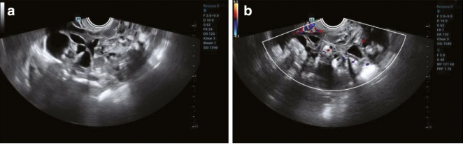
彩色多普勒超声显示肿块内有少量至中等量的血流信号 [68]。少数患者可能伴有胸腔积液和/或腹水。在某些情况下，分泌雌激素的肿瘤可导致子宫内膜增厚（见图 7.89 和 7.90）。
- 颗粒细胞瘤 (GCTs)
(1) 临床概述：
颗粒细胞瘤（GCT）是最常见的性索间质肿瘤，通常表现为低级别恶性。
(2) 超声特征：
(a) 肿块特征：肿瘤边界清晰，包膜完整，形态规则。
(b) 内部回声：GCTs通常表现为多房性囊性或混合囊实性肿块。在混合囊实性肿块中，囊性部分通常包含多个隔室，且壁厚度不均 [69]（见图7.91）。
(c) 相关发现：GCTs常与子宫内膜增厚、子宫内膜息肉甚至子宫内膜癌相关。
(d) 彩色多普勒和频谱多普勒超声：通常在肿块的实性部分检测到丰富的血流信号 [70]。常观察到低阻力动脉谱（见图 7.92）。
- 卵巢囊腺瘤
(1) 临床概述：
卵巢囊腺瘤根据其病理特征可分为浆液性亚型和粘液性亚型。
浆液性卵巢囊腺瘤：此类占所有良性卵巢肿瘤的约25%。这些囊腺瘤大小不一，直径范围为5至10厘米，通常表面光滑。囊内充满黄色的澄清液体。浆液性囊腺瘤进一步分为两个亚型：
Color Doppler ultrasound reveals a small to moderate amount of blood flow signals inside the mass [68]. A small number of patients may present with pleural effusion and/or ascites. In some cases, estrogen-producing tumors can lead to endometrial thickening (see Figs. 7.89 and 7.90).
- Granulosa cell tumors (GCTs)
(1) Clinical overview:
Granulosa cell tumors (GCTs) are the most common type of sex cord-stromal tumor, typically presenting with low-grade malignancy.
(2) Ultrasonographic features:
(a) Mass characteristics: The tumor has clear boundaries, an intact envelope, and regular morphology.
(b) Internal echogenicity: GCTs often appear as multilocular cystic or mixed cystic-solid masses. In mixed cystic-solid masses, the cystic portion typically contains multiple compartments, and the walls are thick with uneven thickness [69] (see Fig. 7.91).
(c) Associated findings: GCTs are frequently associated with endometrial thickening, endometrial polyps, or even endometrial cancer.
(d) Color Doppler and spectral Doppler ultrasound: Abundant blood flow signals are usually detected within the solid portion of the mass [70]. A low-resistance arterial spectrum is often observed (see Fig. 7.92).
- Ovarian cystadenoma
(1) Clinical overview:
Ovarian cystadenomas are classified into serous and mucinous subtypes based on their pathological characteristics.
Serous ovarian cystadenoma: This type accounts for approximately 25% of all benign ovarian tumors. These cystadenomas can vary in size, ranging from 5 to 10 cm in diameter, and typically have a smooth surface. The cysts are filled with yellowish, clear fluid. Serous cystadenomas are further divided into two subtypes:
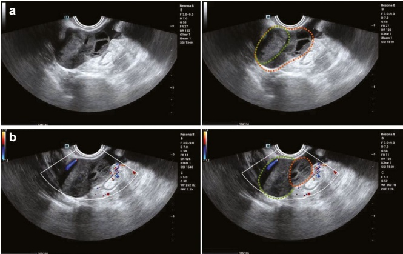
• 简单浆液性囊腺瘤：这些是光滑的，通常为单房性的。
- 乳头状浆液性囊腺瘤：这些通常是多房性的，并具有向肿瘤内部突出的乳头样结构。在某些情况下，可以在显微镜下观察到钙化，表现为从肿瘤壁外生长的颗粒状体 [71]。
粘液性卵巢囊腺瘤：粘液性囊腺瘤占所有良性卵巢肿瘤的约20%，通常为单侧性。这些肿瘤体积较大，直径常在10至30厘米之间，可占据整个盆腔或腹腔。 这些囊肿内充满粘液性或胶状液体。黏液性囊腺瘤主要为多房性，表面光滑，约有10%的病例在肿瘤壁上可见乳头样突起。
• Simple Serous Cystadenomas: These are smooth-lined and generally unilocular.
- Papillary Serous Cystadenomas: These are often multilocular and feature internal papillary projections into the tumor. In some cases, calcifications can be observed microscopically, appearing as grit-like bodies growing outward from the tumor wall [71].
Mucinous ovarian cystadenoma: Mucinous cystadenomas account for about 20% of all benign ovarian tumors and are typically unilateral. These tumors are large, often ranging from 10 to 30 cm in diameter, and can occupy the entire pelvic or abdominal cavity. The cysts are filled with mucinous or jelly-like fluid. Mucinous cystadenomas are predominantly multilocular with smooth surfaces, and in about 10% of cases, papillary projections are present on the tumor walls.
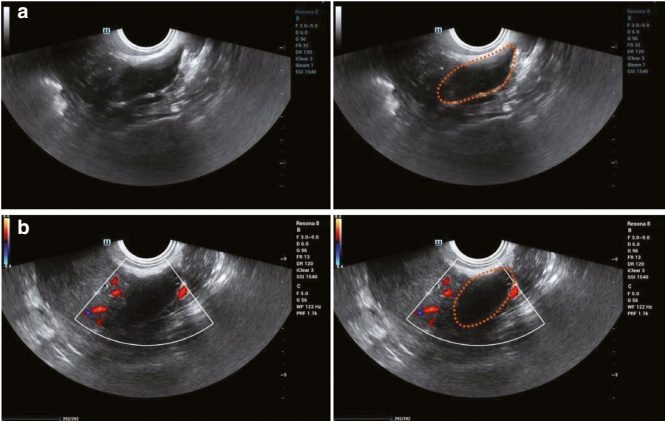
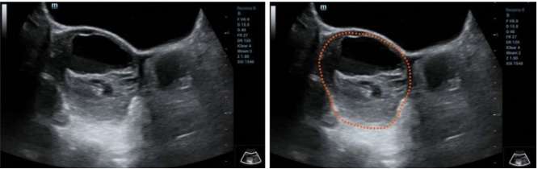
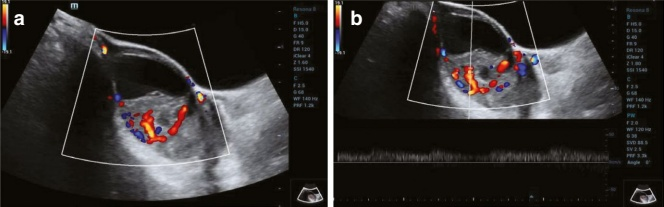
(2) 超声特征：
浆液性卵巢囊腺瘤：
(a) 简单囊腺瘤：
这些是边界清晰、圆形或卵圆形、主要为单房性，内壁光滑的囊肿。
(b) 乳头状囊腺瘤：
这些通常是多房性的，肿瘤内可见大小不一的单发或多发中低回声乳头状突起。乳头状突起之间的钙化可能表现为强回声点。 当乳头状突起非常小时，仅观察到肿瘤壁局限性增厚。乳头状突起越大、越广泛，其基底越宽，肿瘤的潜在恶性程度越高。
(c) 囊性成分：
肿瘤为无回声或可见稀疏的点状回声。
(d) 彩色多普勒和频谱多普勒超声：
彩色多普勒可显示肿瘤壁、间隔和乳头状突起内的点状血流信号。在频谱多普勒超声上通常观察到低速、中等阻力的血流谱。
如果肿瘤壁、隔或乳头状突起内血流丰富，应考虑恶性病变 [65]（见图 7.93 和 7.94）。
粘液性卵巢囊腺瘤：
(a) 一般特征：
肿瘤边界清晰，呈圆形或卵圆形，通常单侧和多囊性（偶尔为单囊性），体积较大（直径>10 cm），壁均匀增厚（>5 mm）。
(b) 内部回声：
该肿瘤显示乏内瘤回声，在无回声区内可见致密、细小、高回声点状回声 [72]。
(2) Ultrasonographic features:
Serous ovarian cystadenoma:
(a) Simple cystadenomas:
These are well-defined, round, or ovoid, predominantly unilocular, with a smooth inner wall.
(b) Papillary cystadenomas:
These are generally multilocular, with single or multiple medium-to-low echogenic papillary projections of varying sizes protruding into the tumor. Calcifications between the papillary projections may appear as strong echogenic spots. When the papillary projections are very small, only localized thickening of the tumor wall is observed. The larger and more extensive the papillary projections are, as well as the wider their base, the higher the potential malignancy of the tumor.
(c) Cystic composition:
The tumor is anechoic or shows sparse punctate echoes.
(d) Color Doppler and spectral Doppler ultrasound:
Color Doppler may reveal punctate flow signals within the tumor wall, septa, and papillary projections. A low-velocity, moderate-resistance flow spectrum is typically observed on spectral Doppler ultrasound.
If there is abundant blood flow within the tumor wall, septa, or papillary projections, malignancy should be considered [65] (see Figs. 7.93 and 7.94).
Mucinous ovarian cystadenoma:
(a) General features:
The tumor is well-defined, round, or ovoid, typically unilateral and multilocular (occasionally unilocular), large in size (diameter >10 cm), and has a uniformly thickened wall (>5 mm).
(b) Internal echoes:
The tumor shows poor intratumor sonolucency, with dense, fine, bright spot echoes within the anechoic area [72].
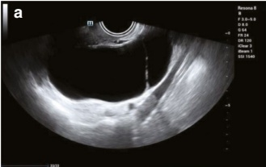
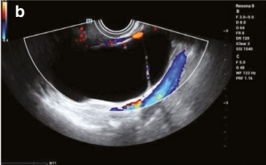
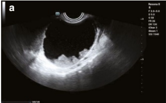
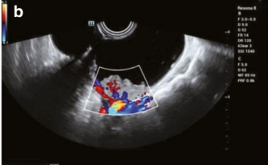
(c) 实体成分和交界性肿瘤：
如果肿瘤含有超过10个包膜下、蜂窝状结节或实性乳头状突起，应考虑交界性肿瘤的可能性。对于多房性囊实性混合肿瘤，应怀疑恶性。
(d) 彩色多普勒和频谱多普勒超声：
可以在肿瘤和间隔壁检测到点状血流信号。通常观察到低速、中阻力的动脉谱。 如果肿瘤壁、间隔壁或乳头状突起内存在丰富的血流，应考虑为临界性或恶性肿瘤（见图 7.95、7.96 和 7.97）。
(c) Solid components and borderline tumors:
If a tumor contains more than 10 subcapsular, honeycomb-like nodules or solid papillary projections, the possibility of a borderline tumor should be considered. Malignancy should be suspected for multilocular mixed cystic-solid tumors [73].
(d) Color Doppler and spectral Doppler ultrasound:
Punctate blood flow signals can be detected in tumor and septal walls. A low-velocity, medium-resistance arterial spectrum is typically observed. If abundant blood flow exists in the tumor wall, septal walls, or papillary projections, a borderline or malignant tumor should be considered (see Figs. 7.95, 7.96, and 7.97).
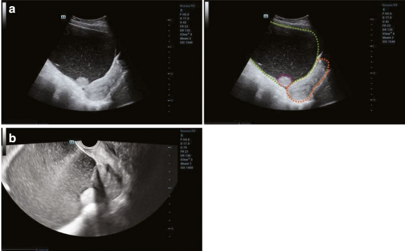
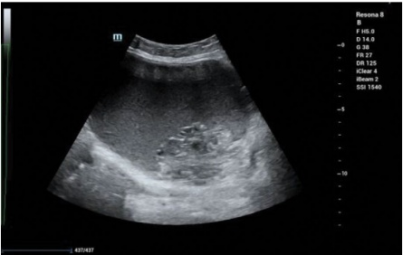
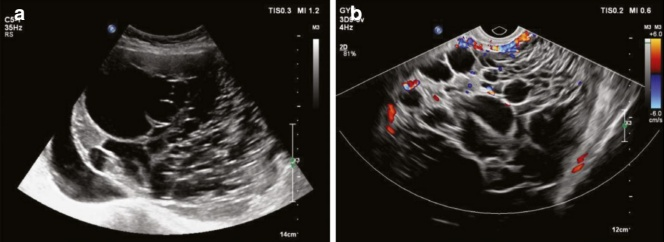
(3) 鉴别诊断：
将单纯卵巢囊肿与单纯浆液性囊腺瘤区分开来在初步超声检查时可能具有挑战性。随访影像学检查以监测囊肿大小的变化可能有助于做出准确的鉴别诊断。
- 上皮性卵巢癌
(1) 临床概述：
上皮性卵巢癌约占所有卵巢癌的90%，包括几种组织学亚型[74]。根据WHO分类，主要的五个亚型是高级别浆液性癌（HGSOC）、低级别浆液性癌（LGSC）、子宫内膜样癌（EC）、透明细胞癌（CCC）和粘液性癌（MC）[75]。
高危妊娠子宫内膜病变表现出异质性生长模式，其特征是大的乳头状突起， 腺体和实质结构，偶见微乳头状形成， 和频繁坏死[76]。 根据其上皮组成，粘液性癌分为胃肠道（GI）型和宫颈内口型。胃肠道型粘液性癌通常较大且多房性，而宫颈内口型粘液性癌较小，房腔较少 [73]。
(2) 超声特征：
上皮性卵巢癌表现出多种外观，包括以囊性为主、混合囊实性或以实体为主的肿块：
(a) 以囊性为主的肿瘤：
这些肿瘤常表现为肿瘤壁不规则增厚、分隔带粗厚且不均匀，囊腔内有无回声液体，有时伴有细小、高回声点状回声。
(b) 主要实性肿瘤：
这些肿块通常呈不规则形状，内部结构不均质，并伴有低回声，可能因出血性坏死而包含不规则的液性区域。
(c) 晚期病变特征：
(3) Differential diagnosis:
Distinguishing a simple ovarian cyst from a simple serous cystadenoma can be challenging on an initial ultrasound examination. Follow-up imaging to monitor changes in cyst size may help make an accurate differentiation.
- Epithelial ovarian cancer
(1) Clinical overview:
Epithelial ovarian cancer accounts for approximately 90% of all ovarian cancers and includes several histological subtypes [74]. According to the WHO classification, the five primary subtypes are high-grade serous carcinoma (HGSOC), low-grade serous carcinoma (LGSC), endometrioid carcinoma (EC), clear cell carcinoma (CCC), and mucinous carcinoma (MC) [75].
HGSOC exhibits a heterogeneous growth pattern characterized by large papillae, glandular and solid structures, occasional micropapillary formations, and frequent necrosis [76]. Based on their epithelial composition, mucinous carcinomas are subdivided into gastrointestinal (GI)-type and endocervical-type. GI-type mucinous carcinomas are typically larger and multilocular, whereas endocervical-type mucinous carcinomas are smaller with fewer locules [73].
(2) Ultrasonographic features:
Epithelial ovarian cancers exhibit a range of appearances, including predominantly cystic, mixed cystic-solid, or predominantly solid masses:
(a) Predominantly cystic tumors:
These tumors often display irregular thickening of the tumor wall, thick and uneven septations, and anechoic fluid within the cystic cavity, sometimes accompanied by fine, bright spot echoes.
(b) Predominantly solid tumors:
These masses typically have irregular shapes, are heterogeneous and hypoechoic, and may include irregular fluid-filled areas due to hemorrhagic necrosis.
(c) Advanced disease features:
卵巢癌常伴有腹水。在晚期，子宫和肠道可能出现癌性浸润或广泛的腹膜转移。
(d) 彩色多普勒和频谱多普勒超声：
彩色多普勒超声常显示肿瘤壁、隔和实性成分内丰富的血流信号。高速度、低阻力的动脉谱是常见的发现（见图 7.98 和 7.99）。
(3) 鉴别诊断：
卵巢囊腺癌必须与良性卵巢肿瘤区分开来。关键区别总结于表7.5。
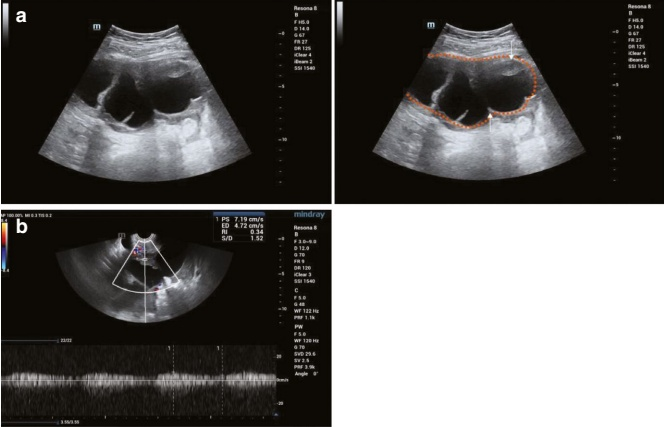
Ovarian cancer frequently presents with ascites. In advanced stages, there may be carcinomatous infiltration of the uterus and intestines or extensive peritoneal metastases.
(d) Color Doppler and spectral Doppler ultrasound:
Color Doppler often reveals abundant blood flow signals within the tumor wall, septa, and solid components. A high-velocity, low-resistance arterial spectrum is a common finding on spectral Doppler ultrasound (see Figs. 7.98 and 7.99).
(3) Differential diagnosis:
Ovarian cystadenocarcinoma must be distinguished from benign ovarian tumors. Key differences are summarized in Table 7.5.
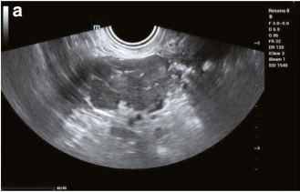
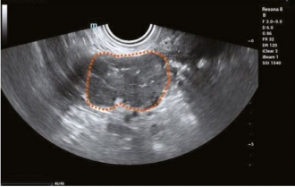
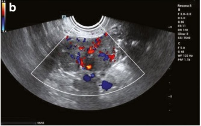
| 良性卵巢肿瘤 | 上皮性卵巢癌 | ||
| 症状和体征 | 疾病持续时间 | 缓慢、进行性进展 | 短暂、快速进展 |
| 体征 | 单侧，表面光滑，多为囊性或规则的实性，活动度好，无腹水 | 主要为双侧，表面结节状，实性或囊实性，伴有血性腹水 | |
| 一般情况 | 良好 | 肌消瘦的逐渐发展 | |
| 超声特征 | 内部回声 | 主要为囊性或均匀实性 | 主要为实性或混合囊实性，实性部分回声紊乱，囊性区域无回声，并可见微小高回声点 |
| 形态和边缘 | 规则、光滑 | 不规则、结节状 | |
| 囊壁和隔 | 壁薄且均匀，内壁光滑 | 壁厚、内壁不规则 | |
| 乳头状结构 | 小、少、规则 | 大、多、不规则 | |
| 彩色多普勒超声 | 无或少血流 | 富血流的实性部分 | |
| 动脉谱图在频谱多普勒上 | 低流速、高阻力（>0.5） | 高流速、低阻力（≤0.5） | |
| 腹膜积液（腹水） | 基本缺失，但OTFG可能伴有积液 | 存在且通常有出血性改变 | |
| 远处转移 | No | 是 |
| Benign ovarian tumors | Epithelial ovarian cancer | ||
| Symptoms and signs | Duration of disease | Long, slow progression | Short, rapid progression |
| Signs | Unilateral, with a smooth surface, mostly cystic or regular and solid, exhibiting good mobility and without ascites | Primarily bilateral, with a nodular surface, solid or cystic-solid, accompanied by hemorrhagic ascites | |
| General condition | Good | Gradual development of cachexia | |
| Ultrasonographic features | Internal echogenicity | Predominantly cystic or uniformly solid | Predominantly solid or mixed cystic-solid, with chaotic echoes in the solid portion, poor sonolucency in the cystic area, and tiny bright spots |
| Morphology and margins | Regular, smooth | Irregular, nodular | |
| Cyst wall and septa | Thin and uniform wall, smooth inner wall | Thick-walled, uneven inner wall | |
| Papillary structures | Small, few, regular | Large, numerous, irregular | |
| Color Doppler ultrasound | No or little blood flow | Solid portion with abundant blood flow | |
| Arterial spectrum on spectral Doppler | Low-velocity, high-resistance (>0.5) | High-velocity, low-resistance (≤0.5) | |
| Peritoneal effusion (ascites) | Mostly absent, but OTFG may be accompanied by effusion | Present and typically hemorrhagic | |
| Distant metastasis | No | Yes |